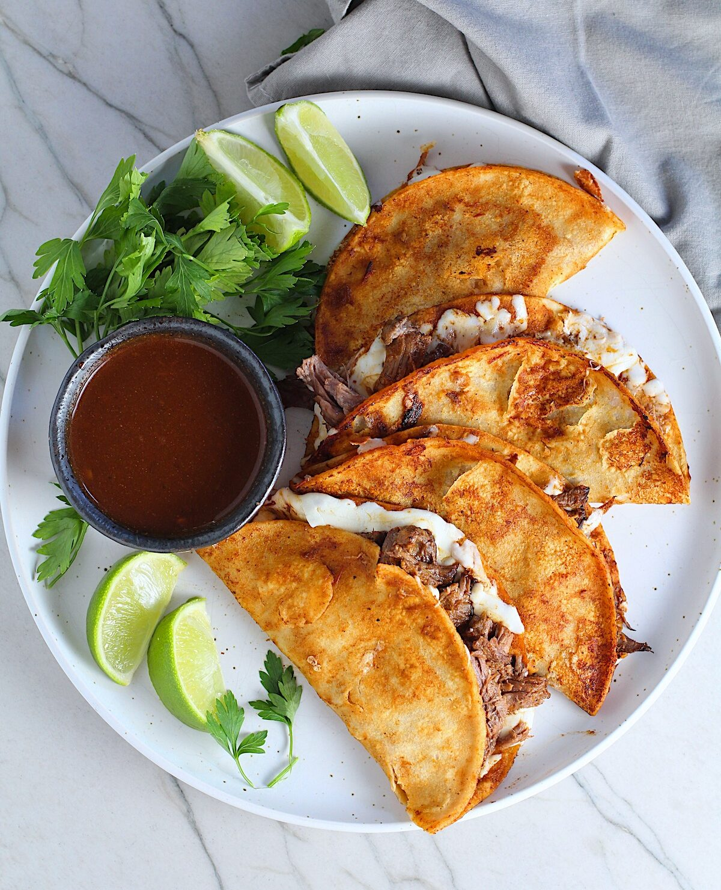

Beef Birria Queso Tacos with Consomme

Description
Birria tacos are so delicious and this recipe is a take on the world's most trendy taco.
Ingredients
Consomme:
- 2 cups reserved sauce from beef birria recipe
- 1 cup chicken broth
- 1/4 cup diced carrots
- 1/4 cup diced celery
- 1/2 cup diced cabbage
Tacos:
- 3 tablespoons reserved beef fat from beef birra recipe, or more as needed
- 8(5 inch) corn tortillas
- 2 cups freshly grated Monterey Jack cheese
- 2 cups shredded Beef Birria
- 4 tablespoons chopped white onion
- 4 tablespoons chopped fresh cilantro
- 1 medium lime, cut into 4 wedges
Steps
- To make the consommé: Stir beef birria sauce, chicken broth, carrots, celery, and cabbage together in a saucepan over high heat. Bring to a simmer, then reduce the heat to medium-low and simmer, occasionally brushing the caramelized bits (fond) off the side with the hot liquid, until vegetables are nice and tender and consommé has reached the desired consistency, about 20 minutes. Reduce the heat to low and keep hot while you prepare the tacos.
- To make the tacos: Heat some reserved beef fat in a large skillet over medium heat until melted. Add two tortillas and flip with a spatula until generously coated in fat. Toast briefly until golden brown, then cover with Monterey Jack cheese and some shredded beef. Drizzle each taco with about 1 tablespoon consommé liquid, then top with some white onion and cilantro.
- Fold tacos in half and press gently. Continue to cook, flipping back and forth, until browned and crispy, 2 to 3 minutes. Transfer to a plate and repeat to make remaining tacos, adding more fat if necessary.
- Ladle consommé into a bowl and garnish with any remaining white onion and cilantro. Squeeze lime wedges into consommé and serve with tacos.